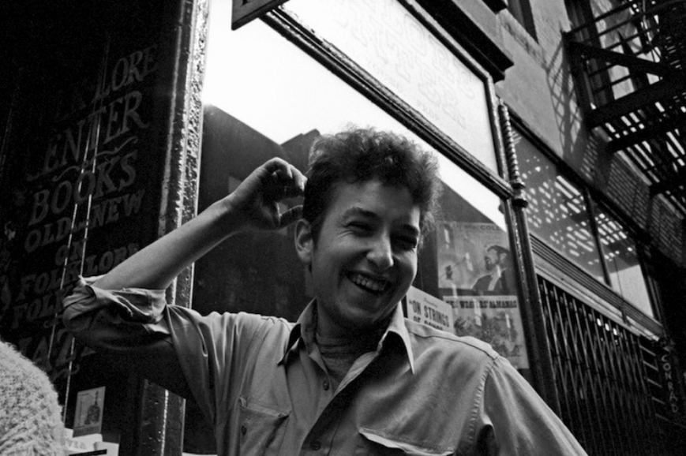

David Gahr Bob Dylan in Front of Izzy Young’s “Folklore Center,” MacDougal Street, Greenwich Village, New York City 1962
“I began hanging out at the Folklore Center, the citadel of Americana folk music. The small store was up a flight of stairs and the place had an antique grace. It was like an ancient chapel, like a shoebox sized institute. …[Proprietor Izzy Young’s] voice was like a bulldozer and always seemed too loud for the little room. Izzy was always a little rattled over something or other. He was sloppily good-natured. In reality a romantic. To him, folk music glittered like a mound of gold. It did for me, too.” Bob Dylan, “Chronicles: Volume One” 2004
Israel “Izzy” Young - 1928-2019 - Ave atque Vale